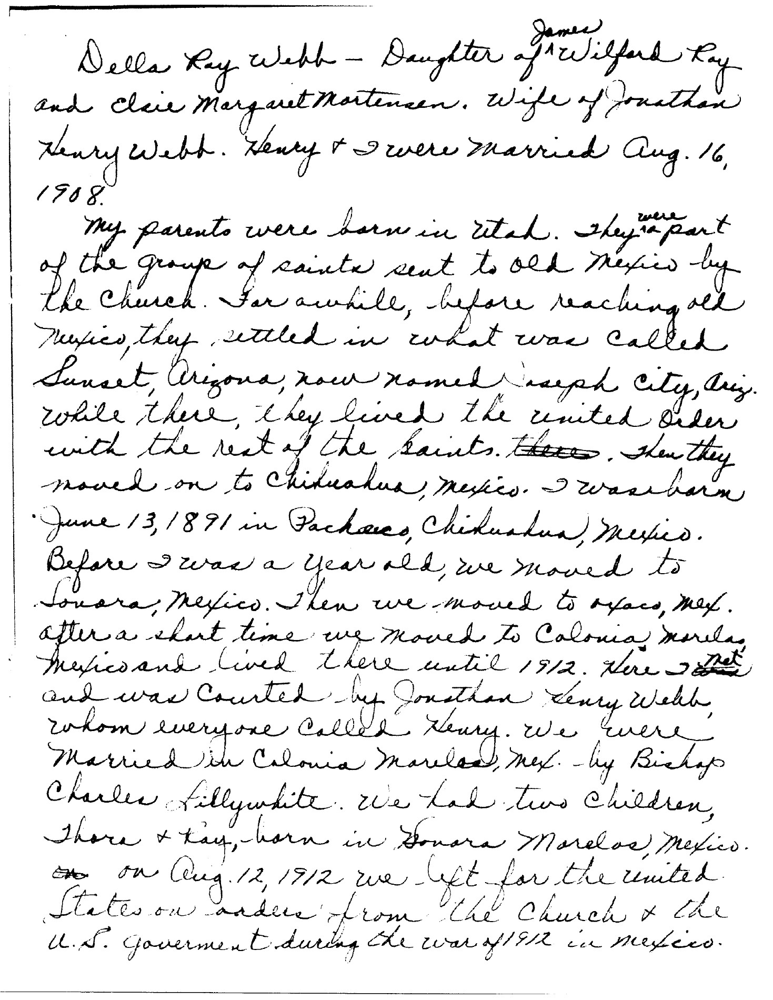
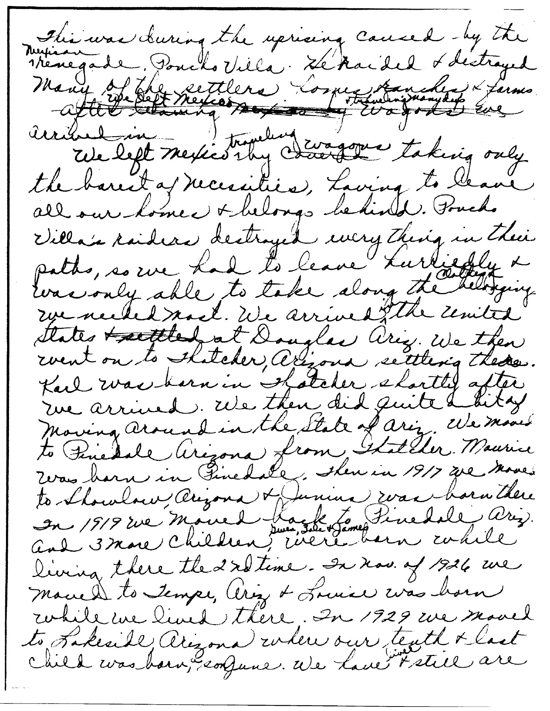
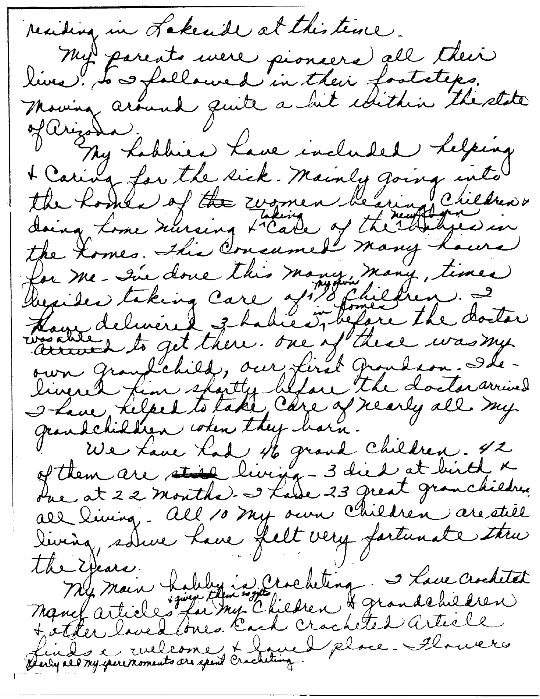
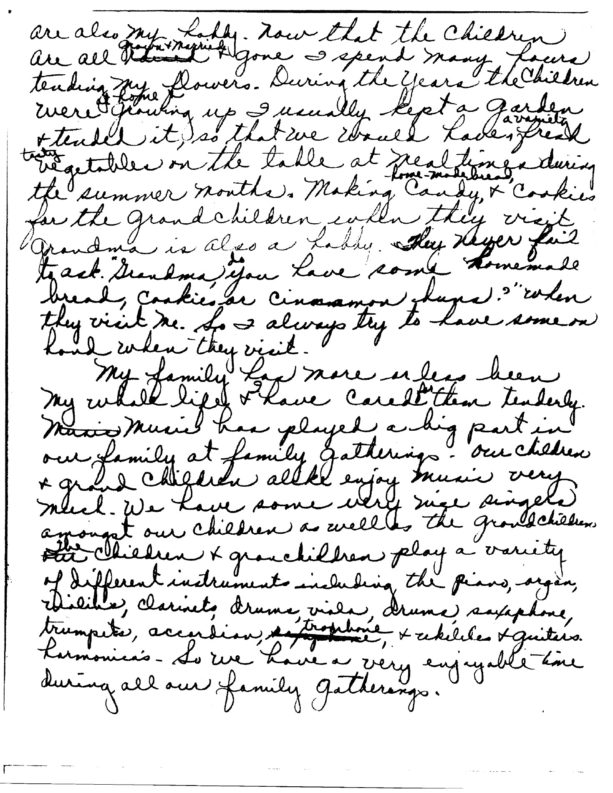

Della Ray Webb - Daughter of {James} Wilford Ray
and Elsie Margaret Mortensen. Wife of Jonathan
Henry Webb. Henry & I were married Aug. 16,
1908.
My parents were born in Utah. They {were} a part
of the group of saints sent to old Mexico by
the Church. For awhile, before reaching old
Mexico, they settled in what was called
Sunset, Arizona, now named Joseph City, Ariz.
While there, they lived the united Order
with the rest of the Saints. ~~Then~~ Then they
moved on to Chihuahua, Mexico. I was born,
June 13, 1891 in Pacheco, Chihuahua, Mexico.
Before I was a year old, we moved to
Sonora, Mexico. Then we moved to [oxaco?], Mex.
After a short time we moved to Colonia Morelos,
Mexico and lived there until 1912. Here I {met} [crossed out: illegible]
and was Courted by Jonathan Henry Webb,
whom everyone called Henry. We were
married in Colonia Morelos, Mex. - by Bishop
Charles Lillywhite. We had two children,
Thora & Ray, born in Sonora Morelos, Mexico.
~~On~~ On Aug. 12, 1912 we left for the United
States on orders from the Church & the
U.S. government during the war of 1912 in Mexico.
This was during the uprising caused by the
{Mexican} renegade, Pancho Villa. He raided & destroyed
many of the settlers crops, ranches & farms.
[crossed out: partly legible wording including “After leaving,” “We left Mexico,” “traveling,” “wagons” and “arrived in”; reading order uncertain]
We left Mexico {traveling} by Wagons taking only
the barest of necessities, having to leave
all our homes & belongs behind. Pancho
Villa's raiders destroyed everything in their
paths, so we had to leave hurriedly &
were only able to take along the {clothing} ~~belongings~~
we needed most. We arrived {in} the United
States ~~& settled~~ at Douglas Ariz. We then
went on to Thatcher, Arizona settling there.
Karl was born in Thatcher shortly after
we arrived. We then did quite a bit of
moving around in the State of Ariz. We moved
to Pinedale Arizona from Thatcher. Maurice
was born in Pinedale. Then in 1917 we moved
to Showlow, Arizona & Junius was born there
In 1919 we moved back to Pinedale Ariz.
And 3 more Children, {Gwen, Zola & James} were born while
living there the 2nd time. In Nov. of 1926 we
moved to Tempe, Ariz & Louise was born
while we lived there. In 1929 we moved
to Lakeside Arizona where our tenth & last
child was born, June. We have {lived} & still are
residing in Lakeside at this time.
My parents were pioneers all their
lives, so I followed in their footsteps.
Moving around quite a bit within the state
of Arizona
My hobbies have included helping
& Caring for the sick. Mainly going into
the homes of ~~the~~ women having Children &
doing home nursing & {taking} Care of the {newborn} babies in
the homes. This Consumed many hours
for me. I've done this many, many, times
besides taking Care of {my own} 10 Children. I
have delivered 3 babies {in homes} before the doctor
{was able} ~~arrived~~ to get there. One of these was my
own grandchild, our first grandson. I de-
livered him shortly before the doctor arrived
I have helped to take Care of nearly all my
grandchildren when they born.
We have had 46 grand Children. 42
of them are ~~still~~ living - 3 died at birth &
one at 22 months. I have 23 great grandchildren
all living. All 10 my own Children are still
living, so we have felt very fortunate thru
the years.
My main hobby is Crocheting. I have Crocheted
many articles {& given them as gifts} for my Children & grandchildren
& other loved ones. Each Crocheted article
finds a welcome & loved place. Flowers
{Nearly all my spare moments are spent Crocheting.}
are also my hobby. Now that the Children
are all {grown & married} ~~[illegible]~~ & gone I spend many hours
tending my flowers. During the years the Children
were {at home} growing up I usually kept a garden
& tended it, so that we could have, {a variety} fresh
~~two~~ vegetables on the table at mealtimes during
the summer months. Making {home-made} Candy & Cookies
for the grandchildren when they visit
Grandma is also a hobby. {They never fail}
to ask “Grandma, {do} you have some homemade
bread, cookies or Cinnamon buns?” when
they visit me. So I always try to have some on
hand when they visit.
My family of more or less been
my whole life & have Cared {for} them tenderly.
~~Music~~ Music has played a big part in
our family at family gatherings. Our Children
& grand Children alike enjoy music very
much. We have some very nice singers
amongst our Children as well as the grandchildren
{Our} ~~The~~ Children & grandchildren play a variety
of different instruments including the piano, organ,
violin, clarinets, drums, violin, drums, saxophone,
trumpets, accordion, ~~[illegible]~~ {trombone}, & ukelele & guitars.
harmonica. So we have a very enjoyable time
during all our family gatherings.